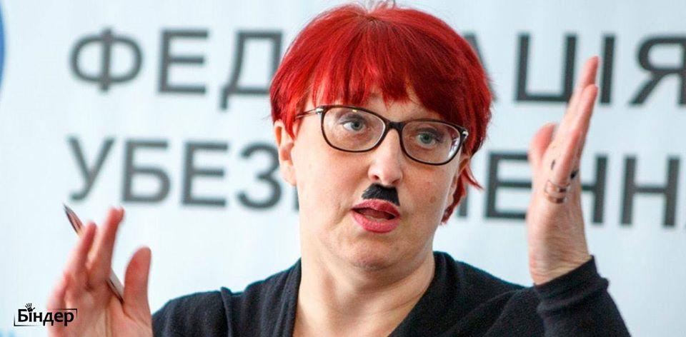
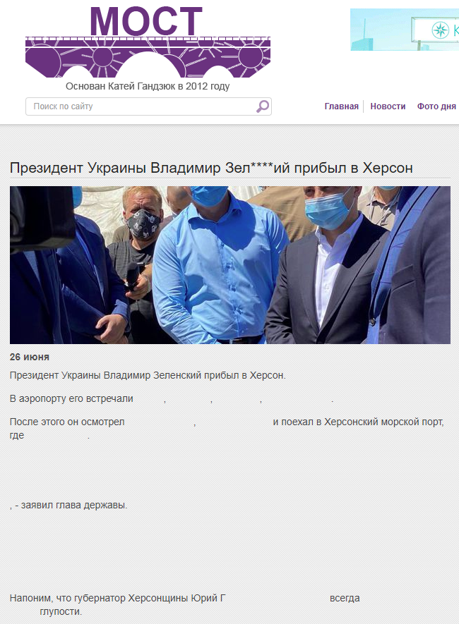
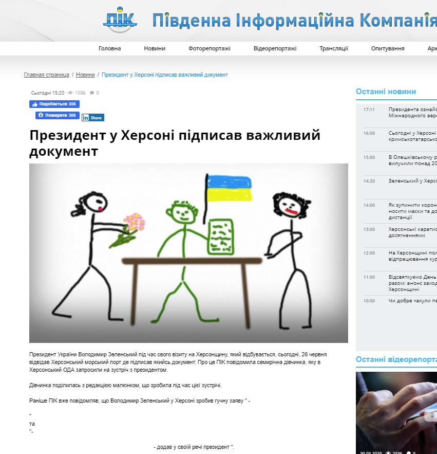
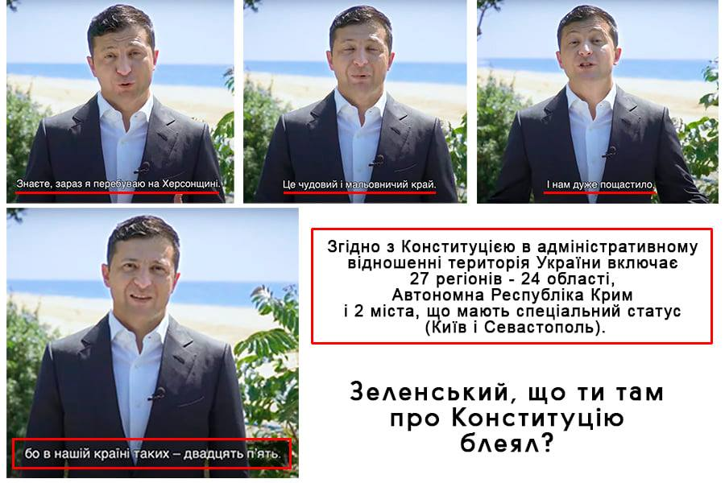

20.06.2020
Міносвіти перешкоджає Міжнародному конкурсу з української мови ім. Петра Яцика »»»
22.06.2020
За московським часом: Шмигаль зробив резонансну заяву щодо дати початку Другої світової війни »»»
UPD: Слідом за Шмигалем: Разумков назвав помилкову дату початку Другої світової війни »»»
Діти з окупованого Донбасу зможуть не складати ЗНО для вступу до вишів, - Зеленський »»»
UPD: СБУ затримала терориста «ДНР», який їхав вступати до українського ВНЗ »»»
А скільки їх ще буде - нерозпізнаних ворожих агентів у вишах по всій Україні!
Гірняки держшахт почали мітингувати в Києві »»»
23.06.2020
Фігурантка скандалу Клітіна стала радником голови Державного космічного агентства »»»
Президент не приїхав до медиків, які чекали його в лікарні Мечникова в Дніпрі »»»
Нардепи від "Слуги народу" знову зухвало порушили карантин »»»
24.06.2020
Президент воюючої країни лазить по чатах в соцмережах і погрожує далекобійникам »»»
Зацініть висоту стилю найвеличнішого лідора сучасності:
Якщо президент країни називає свій народ засранцями, то він сам тоді хто? Вождь засранців? Головзасранюк? Хто?
UPD: У Зеленського оконфузились: звернення до далекобійників опублікували “завтрашнім” числом »»»
UPD: “Вова, ну ти і сси*ун”: Зеленський потрапив під роздачу через “засранців” »»»
Нацистські заяви "Слуги народу" Галини Третьякової
У мережі спливло скандальне відео голови комітету Ради з питань соцполітики та захисту прав ветеранів Галини Третьякової, у якому вона заявила, що у людей, які заводять дітей заради соціальних виплат, вони народжуються "низької якості" »»»

UPD: "Слуга народу" Третьякова заявила, що безробітних слід стерилізувати: з'явилась реакція Ради профспілок »»»
UPD: "Слуга народу" Третьякова заявила про "організований булінг": Так, слова про дітей "низької якості" обрані невдало, але йти нікуди не збираюся »»»
UPD: Разумков прокоментував скандальні заяви Третьякової »»»
UPD: У "Слузі народу" не бачать причин для позбавлення повноважень народної депутатки Галини Третьякової за її скандальне висловлювання про "дітей низької якості", тому що вона є професіоналом »»»
Ну якщо це у них "професіонали" такі, то страшно собі уявити, яку ідеологію сповідують "не професіонали"!
UPD: Термін "якість дітей" не мій, а нобелівського лауреата, - "слуга народу" Третьякова »»»
UPD: «Слуга народа», назвавшая детей безработных низкокачественными, оказалась мультимиллионером, а ее муж - БЕЗРАБОТНЫМ »»»
Чергова "слуґа" в сосну в'їб@лась (В.Прозапас)
26.06.2020
В період пандемії Україна продала 18 тон масок Росії »»»
В Україні у 2020 році на 70% скоротилось видавництво книжок »»»
Зеленський в Херсоні
Зеленський у Херсоні відкрив... футбольне поле »»»
Який призЕдент, такі у нього й "відкриття"! То місточок через річку-вонючку, тепер футбольне поле. Скоро дійде до відкривання автобусних зупинок і лавочок?
Херсонських журналістів не пустили на зустріч із президентом, акредитувавши лише лояльні до глави держави видання. Місцеві ЗМІ влаштували флешмоб на знак протесту і опублікували "пусті" новини. »»»


Зеленський неодноразово обіцяв шахтарям погасити заборгованість по зарплатах і кожного разу навіть називав конкретні дати, але жодного разу він так і не спромігся виконати свого слова »»»
UPD: Невиплата зарплат і російське вугілля: до Києва на безстрокову акцію протесту їдуть шахтарі »»»
27.06.2020
Генпрокуратура: Шарій може безперешкодно повертатись в Україну »»»
Вата вату не зачепить, лише патріотів. Російський пропагандист може спати спокійно, а лікар патріот сяде у в'язницю за слова про зелоха. Шмарій - кращий друг зебилів і зебільної влади! На одного господаря з рашки працюють!
“Надрукувати гроші і роздати українцям”: У “Слузі народу” знайшли вихід з кризи »»»
Той випадок, коли до влади дорвалися випускники Трускавецького університету...
Зеленський роздав нагороди до Дня Конституції. Серед нагороджених Потап, Кароль, Білик і працівники “1+1” »»»
А кого клоун повинен був нагороджувати? Військових? Медиків? Скоморох може нагороджувати тільки таких як сам. Хто краще в сауні на піаніні грає, той для нього герой! Вони в першу чергу малороси, за це і отримали нагороду від моніки
Стефанчук ЗБРЕХАВ про слухання у суді справи проти кнопкодавів »»»
UPD: Рух ЧЕСНО спростовує заяву народного депутата Стефанчука щодо справи кнопкодава »»»
Зеленський не закінчив, а посилив "епоху бідності": 37% стали жити ще гірше »»»
UPD: Оцінка громадянами першого року діяльності Президента та нової влади (квітень 2020р.) »»»
28.06.2020
Зеленський оголосив, що Крим і місто Севастополь не є Україною »»»
Гарант Конституції відкрито демонструє своє НЕЗНАННЯ Конституції!

Захистимо Конституцію від зеленських! »»»
Скандальний нардеп зі “Слуги народу” фінансово підтримав Шарія »»»
29.06.2020
Третьякова звинувачує родичів зниклих безвісті на Донбасі в обмані »»»
Венедіктова підробила свою постанову з помилками »»»
30.06.2020
Колишня суддя Царевич, яка ухвалювала вироки автомайданівцям, визнана невинуватою »»»
Убийство Шеремета: на адвоката подозреваемой Кузьменко завели дело »»»
Венедиктова вважає, що Порошенко в суді має доводити свою невинуватість »»»
Той випадок, коли на 300% свій прокурор не знає базових понять права! Не Порошенко має доводити свою невинуватість, а Венедіктова повинна довести його провину! Але для ручної собачки Зеленського поняття презумпції невинуватості - порожній звук!